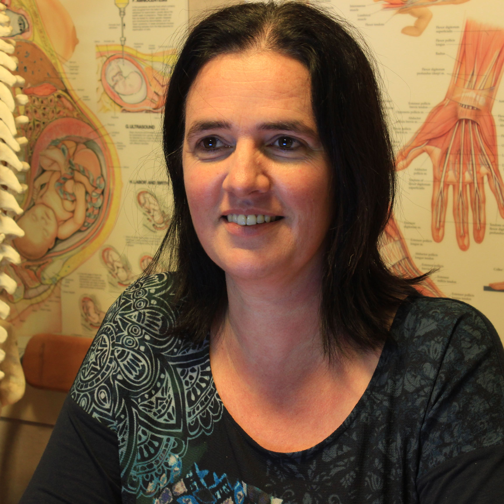

Veerle Van den Abeele
Veerle studeerde in 1991 af als Master in de Revalidatiewetenschappen en Kinesitherapie aan de KULeuven met als specialisatie manuele therapie en handrevalidatie.
Na vier jaar werkervaring in verschillende zelfstandige praktijken richtte ze in 1995 een eigen praktijk op. Sindsdien volgde ze verschillende bijscholingen (o.a. core stability, taping, lymfedrainage, pre- en postnatale kinesitherapie, …